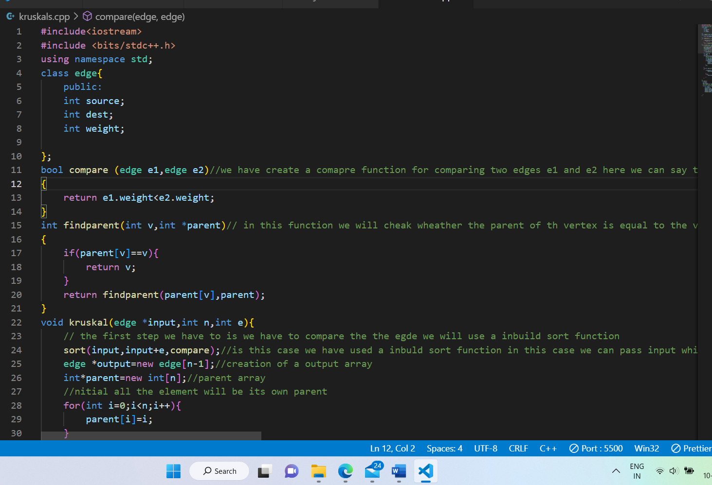
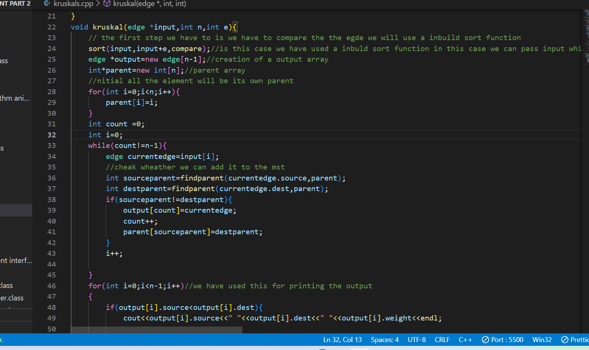
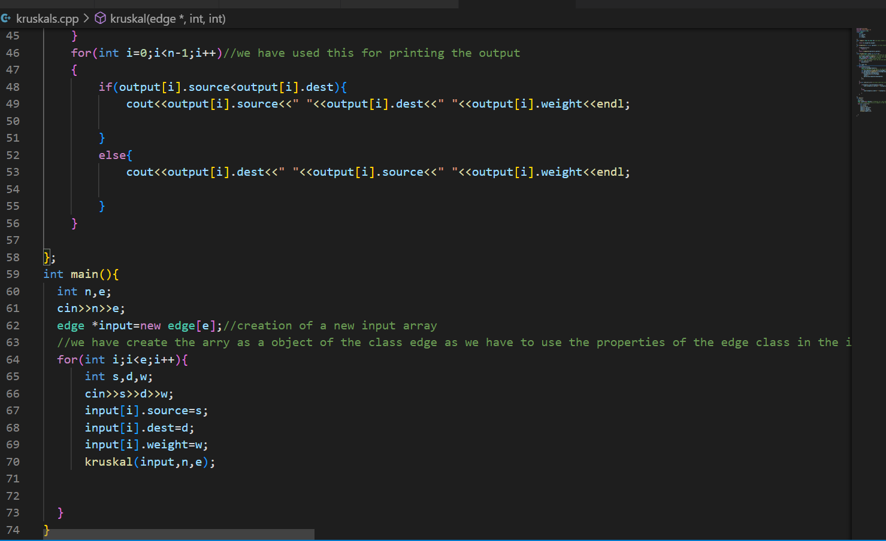

Kruskals Algorithm
About the algorithm:
Kruskal's Algorithm is used to find the minimum spanning tree for a connected weighted graph. The main target of the algorithm is to find the subset of edges by using which we can traverse every vertex of the graph. It follows the greedy approach that finds an optimum solution at every stage instead of focusing on a global optimum.

kruskal algorithm:
- In Kruskal's algorithm, we start from edges with the lowest weight and keep adding the edges until the goal is reached.
- The steps to implement Kruskal's algorithm are listed as follows -
- First, sort all the edges from low weight to high.
- Now, take the edge with the lowest weight and add it to the spanning tree.
- If the edge to be added creates a cycle, then reject the edge.
- Continue to add the edges until we reach all vertices, and a minimum spanning tree is created.
code for kruskal algorithm:


